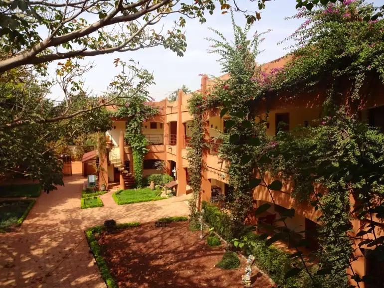

Village Artisanal
Description
Le Village Artisanal de Bobo-Dioulasso est un espace unique où se rencontrent tradition, créativité et savoir-faire. Il regroupe plusieurs ateliers d’artisans spécialisés dans la sculpture sur bois, la poterie, le tissage, la maroquinerie, la bijouterie et bien d'autres métiers d’art. C’est également un lieu de vente directe, permettant aux visiteurs d’acquérir des œuvres uniques fabriquées localement.
Historique
Créé dans les années 1990 dans le but de valoriser l’artisanat local, le Village Artisanal est rapidement devenu un centre économique et touristique majeur de la ville. Il favorise la transmission des savoirs entre générations et joue un rôle important dans la promotion culturelle du Burkina Faso. Il est souvent cité comme un modèle de développement économique durable par la mise en valeur des ressources humaines et culturelles locales.